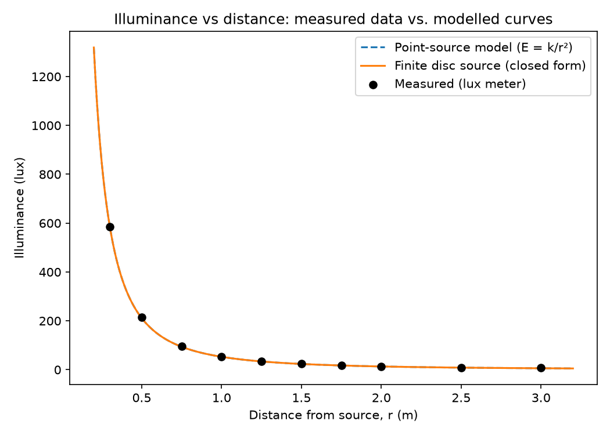

Side project
How Light Travels
An exploration of the physics and mathematics behind light, written from a lighting designer's perspective
Introduction
Every time I stand behind a lighting desk and watch a beam cut through smoke onto a stage, I am looking at something genuinely strange. Light feels instant. Flip a switch and a room is lit. Point a fixture and the beam appears to simply exist, stretching from the lantern to the surface it hits, as though it were always there. But light is not instant, and it does not simply exist. It travels. It has a speed, a direction, a wavelength, and a set of mathematical rules that govern exactly how it bends, spreads, reflects, and focuses. Understanding those rules is not just an academic exercise for me. It is the difference between guessing where a beam will land and knowing it, and it is the reason a Fresnel lantern throws a soft edged wash while a profile spot cuts a razor sharp shape out of the dark.
This document is my attempt to properly understand how light travels, from the physics of what light actually is, through to the mathematics that describes its behaviour, and finally to how that mathematics shows up directly in the equipment I use on a rig.
What Light Actually Is
Light is electromagnetic radiation. That single sentence carries a huge amount of weight, so it is worth unpacking properly. An electromagnetic wave is made up of two oscillating fields, an electric field and a magnetic field, which are perpendicular to each other and both perpendicular to the direction the wave is travelling. As the electric field oscillates, it generates a changing magnetic field, and that changing magnetic field in turn generates a changing electric field. The two fields sustain each other, and the whole disturbance propagates through space without needing a medium to travel through, which is why light can cross the vacuum of space from the Sun to reach us.
James Clerk Maxwell brought this all together in the 1860s with a set of four equations, now known simply as Maxwell's Equations, which describe how electric and magnetic fields are generated and how they interact.
∇ · B = 0
∇ × E = −∂B/∂t
∇ × B = μ₀J + μ₀ε₀ ∂E/∂t
What makes these equations remarkable is that when Maxwell combined the third and fourth equations in a vacuum, with no charge density and no current, he derived a wave equation for the electric field:
This has exactly the form of a wave equation, and comparing it to the general wave equation
tells us that the speed of this wave is
When Maxwell plugged in the known values for the permittivity of free space, ε₀ = 8.854 × 10⁻¹² F/m, and the permeability of free space, μ₀ = 4π × 10⁻⁷ H/m, the number that came out was approximately 3 × 10⁸ metres per second. That number matched the experimentally measured speed of light almost exactly, and it was one of the great unifying moments in physics: light itself is an electromagnetic wave, and its speed can be derived purely from electric and magnetic constants.
Describing the Wave
Once we know light is a wave, we can describe it using the same language used for any wave: wavelength, frequency, period and amplitude.
The relationship between the speed of a wave, its frequency and its wavelength is:
where c is the speed of light, f is the frequency in hertz, and λ is the wavelength. This single equation explains why different colours of light are different colours in the first place. Visible light runs from around 400 nanometres, violet, to around 700 nanometres, red. Because c is constant, a shorter wavelength must correspond to a higher frequency, which is why violet light has a higher frequency than red light. On a lighting rig, this is the same underlying physics that governs the difference between a deep blue gel and a warm amber one, both are the same phenomenon travelling at the same speed, just oscillating at different rates.
A travelling wave can also be written explicitly as a function of position and time:
where E₀ is the amplitude, k = 2π/λ is the wave number, and ω = 2πf is the angular frequency. This is the mathematical object that is actually oscillating as light propagates through space, and everything else in this document, reflection, refraction, diffraction, is really just a description of what happens to this function when it meets a boundary or an obstacle.
Reflection
Reflection is the simplest behaviour to describe mathematically, and it is also the most fundamental to lighting design, since almost every surface on a stage set reflects some light back to the audience.
The Law of Reflection states that the angle of incidence equals the angle of reflection, both measured from the normal, an imaginary line perpendicular to the reflecting surface:
This is why a mirror ball, or any highly reflective surface hit by a sharp beam, produces such precisely placed points of light. Every incoming ray obeys this rule individually, so the geometry of the reflected beam is completely predictable once you know the angle of the light source and the angle of the surface.
Refraction and Snell's Law
Refraction is where light bends as it passes from one medium into another, and it is the single most important phenomenon for anyone who works with lenses, because it is the reason lenses work at all.
Light travels at different speeds in different materials. In a vacuum it travels at c, but in glass, water or plastic it travels more slowly. We describe how much slower using the refractive index of the material:
where v is the speed of light in that particular medium. Glass typically has a refractive index of around 1.5, meaning light travels about one and a half times slower through glass than through a vacuum.
When light crosses the boundary between two materials with different refractive indices, it changes direction, and the exact amount it bends is given by Snell's Law:
Here θ₁ is the angle of incidence in the first medium, θ₂ is the angle of refraction in the second medium, and n₁, n₂ are the respective refractive indices. This equation is the entire foundation of lens design. A lens is simply a carefully shaped piece of glass or plastic that uses Snell's Law, applied across a curved surface, to bend every incoming ray of light toward, or away from, a single focal point.
Lenses and the Fresnel Lens
For a simple thin lens, the relationship between the object distance u, the image distance v, and the focal length f is given by the thin lens equation:
and the focal length itself, for a lens made from a material of refractive index n with two curved surfaces of radii R₁ and R₂, is described by the Lensmaker's Equation:
This is where lighting design connects directly back to the theory, because the Fresnel lens is one of the cleverest applications of this equation in engineering history. A conventional plano-convex lens focuses light using a single smooth curved surface, but to get a strong focusing power, that curve needs to be quite pronounced, which means the lens has to be thick and, at the scale used in a stage lantern, extremely heavy.
Augustin-Jean Fresnel's insight, developed originally for lighthouses in the early nineteenth century, was to realise that it is not the bulk of the glass that matters for the physics, only the angle of the surface at each point where light actually strikes it. Snell's Law only cares about the local angle of the surface, not what is behind it. So Fresnel took the curved surface of a conventional lens and collapsed it into a series of concentric stepped rings, each one holding onto the same surface angle as the original curve at that radius, but with the unnecessary glass behind it removed.
The result is a lens that can reproduce almost the same focusing behaviour as a much thicker conventional lens, but at a fraction of the weight and material cost. Every one of those visible concentric rings on a Fresnel lantern lens is a physical record of Snell's Law being applied piecewise, ring by ring, across what used to be one continuous curved surface. This is also exactly why Fresnel lanterns produce that distinctive soft edged beam rather than a hard edged one, the discontinuities between the rings scatter a small amount of light at each boundary, softening what would otherwise be a perfectly crisp focal point.
Diffraction and Interference
Light does not only travel in straight lines and bend at boundaries, it also spreads and interferes with itself, which is a direct consequence of it being a wave rather than a simple stream of particles.
Huygens' Principle offers a beautifully simple way to picture this. It states that every point on a wavefront can be treated as a source of new, tiny secondary wavelets, and the overall new wavefront a moment later is the sum, or envelope, of all those secondary wavelets. This single idea explains diffraction, the bending of light around obstacles and through apertures, because at the edge of a gap or obstacle, some of those secondary wavelets are unobstructed while others are blocked, and light bends into the geometric shadow as a result.
When two light waves overlap, they interfere according to the difference in the distance each one has travelled, known as the path difference. For constructive interference, where the waves reinforce each other, the path difference must be a whole number of wavelengths:
For destructive interference, where the waves cancel out, the path difference must be a half integer number of wavelengths:
This is the underlying physics behind the shimmering colour patterns you sometimes see on soap bubbles or thin oil films, and it is a genuine reminder that light, at a fundamental level, behaves as a wave capable of adding to and cancelling itself out.
How Light Spreads: The Inverse Square Law
For anyone designing lighting, one equation matters more practically than almost any other, and that is the inverse square law for intensity. As light spreads out from a point source, the same total amount of energy is distributed over an ever larger sphere, and since the surface area of a sphere grows with the square of its radius, the intensity of the light falls off with the square of the distance from the source:
where P is the total power output of the source and r is the distance from it. In practical terms, this means that doubling the distance between a lantern and the surface it is lighting does not halve the brightness, it reduces it to a quarter. This single equation is the reason lighting designers cannot simply guess trim heights and throw distances, it is the mathematics behind every focus chart and every decision about how far back a fixture needs to be hung to achieve an even wash across a stage.

Bringing It Together
What I find genuinely exciting about all of this is how a handful of equations, Maxwell's derivation of the speed of light, Snell's Law, the lensmaker's equation, the inverse square law, quietly sit behind every single decision made on a lighting rig. When I choose a Fresnel over a profile because I want a softer edge, I am really choosing between two different physical implementations of the same underlying law of refraction. When I calculate how far back to hang a wash light to cover a set evenly, I am applying the inverse square law whether I consciously think about it or not. When light bounces off a mirror ball in perfectly placed points, that is the law of reflection playing out across hundreds of tiny flat surfaces simultaneously.
Lighting design often gets treated as a purely creative discipline, and in many ways it is, but underneath every creative decision is a layer of physics that has been understood, refined and mathematically formalised over more than three centuries, from Snell in the 1600s to Fresnel in the 1820s to Maxwell in the 1860s. Learning the mathematics behind how light actually travels has not made lighting feel less magical to me. If anything, it has made me appreciate it more, because now when I watch a beam cut through smoke on a stage, I know exactly why it is doing what it is doing, right down to the equations describing the electric and magnetic fields oscillating inside it.